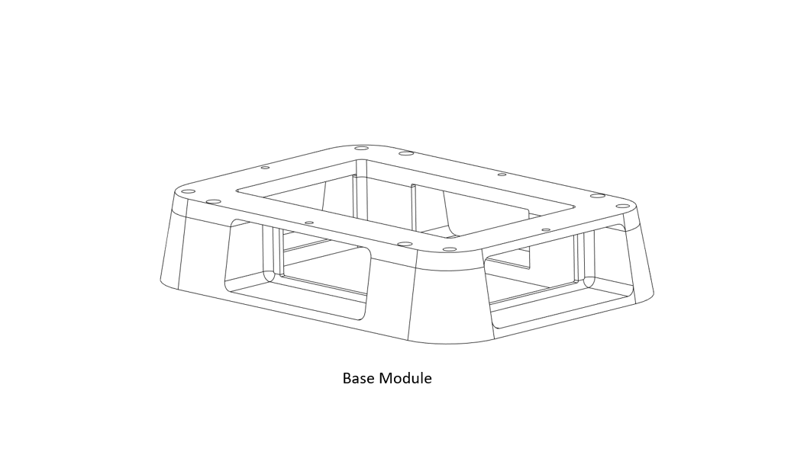
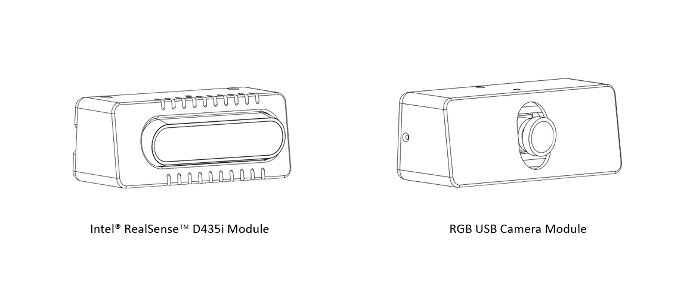
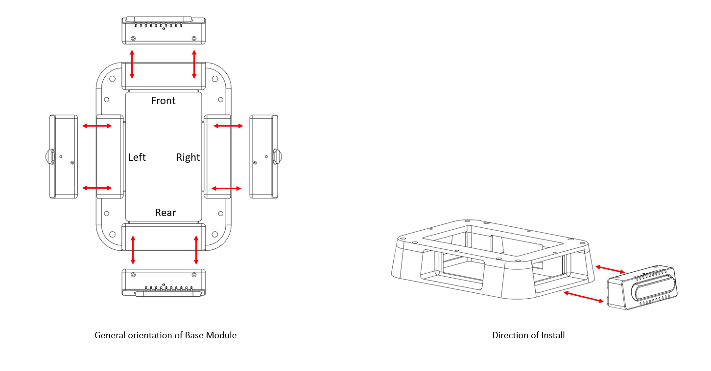
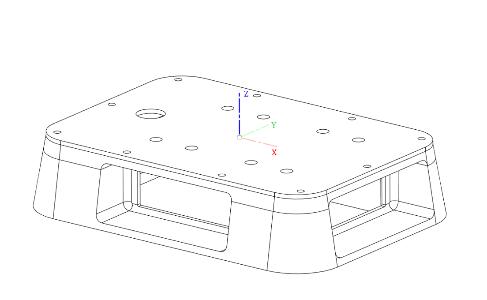
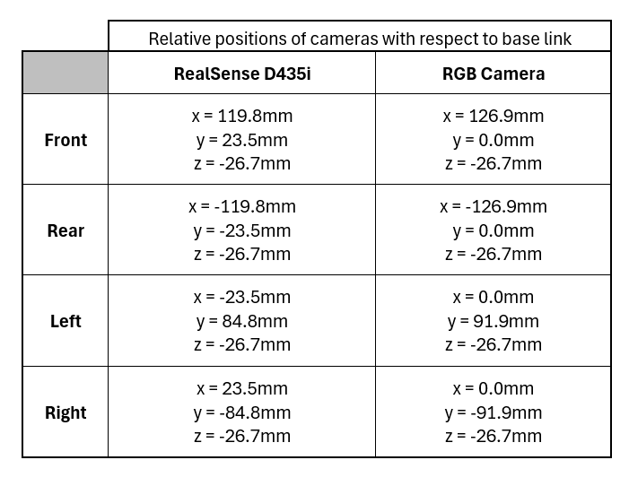

UGV Devkit - Vision Extension
Revision History
Revision |
Date (DD/MM/YYYY) |
Author |
Changes |
|---|---|---|---|
1 |
10/08/2024 |
WR Dev Team |
Initial release |
This sensor kit or extension module for the UGV development kit provides a layer to install multiple types of cameras, namely the Intel® RealSense™ Depth camera as well as an RGB camera. It is designed to provide a base for teleoperation function as well as improved perception ability for your set up.
This kit consists of a Base Module where different camera types can be mounted in various combinations to the development kit. The camera modules are shown in the image below;
{kind=link}

{kind=link}

Key Specifications
- Intel® RealSense™ D435i Depth camera
Camera module: Intel RealSense Module D430 + RGB Camera
Vision processor board: Intel RealSense Vision Processor D4
Image sensor technology: Global Shutter
Ideal range: 0.3 m to 3 m
- Depth
Depth technology: Stereoscopic
Minimum depth distance (Min Z) at max resolution: ~28 cm
Depth Accuracy: less 2% at 2m
Depth Field of View (FOV): 87° × 58°
Depth output resolution: Up to 1280 × 720
Depth frame rate: Up to 90 fps
- RGB
RGB frame resolution: 1920 × 1080
RGB frame rate: 30 fps
RGB sensor technology: Rolling Shutter
RGB sensor FOV (H × V): 69° × 42°
RGB sensor resolution: 2 MP
- RGB USB Camera
RGB camera (2.0mp)- with tilt function to adjust angle of lens
Sensor specification: 2.7inch
Frame rate: Up to 30fps
Resolution: Up to 1920 x 1080
Sensor FOV: 135°
Video Codec(s): MJPG, YUY2, H.264
Image sensor technology: Electronic rolling shutter/ Frame exposure
Operating voltage: 5V (USB 2.0 connection interface)
As this is a modular kit, there are multiple configurations available for this kit.
There are a total of 4 compartments in the Base Module, in which either camera module can be installed.
Please refer to the images below for more information.
{kind=link}

Reference Frames
The reference frames for the cameras follow the Right Hand Rule convention and are point cloud-centric frames of reference. They also follow Robotics convention with the X-axis pointing forwards.
The Cartesian coordinates O-XYZ of the components are defined as below: Point O of the Top Plate is the origin, and O-XYZ is the point cloud coordinates of the module.
{kind=link}

Relationship between sensors
Taking the Top Plate as the reference link for this extension, the relative position of both cameras are provided in the table below based on the different possible configurations:
{kind=link}

Note
More information on the D435i Depth camera can be found here